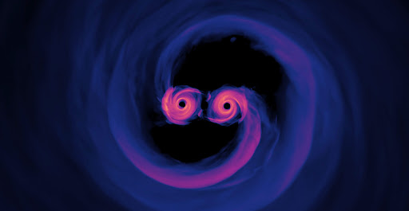

블랙홀이 되는 조건

강한 중력 붕괴
질량이 매우 큰 별이 붕괴하며 블랙홀이 생성됩니다.

슈바르츠실트 반경 도달
천체가 특정 크기 이하로 압축되면, 중력이 빛조차 빠져나올 수 없을 만큼 강해집니다.

사건의 지평선 형성
사건의 지평선 내부로 들어간 물체는 다시 빠져나올 수 없습니다.
블랙홀 주변의 시간과 공간

시간 지연
블랙홀 근처에서는 시간이 느리게 흐르며, 사건의 지평선에서는 정지된 것처럼 보입니다.

공간의 왜곡
강력한 중력은 공간을 휘게 하고, 빛의 경로를 변경시킵니다.